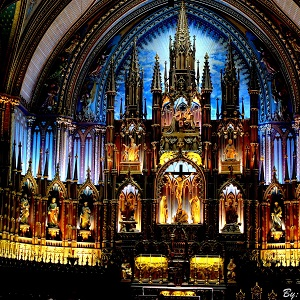
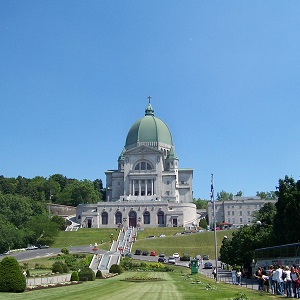
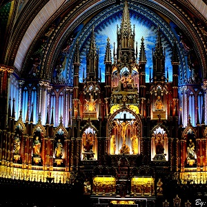
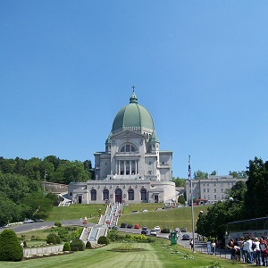

Mont-Royal rises 233 meters above the city and is the green lung near the city center. A stroll through this lovely park enables the visitor to see monuments to Jacques Cartier and King George VI, to spend some time by Lac-aux-Castors, and to have a look at the cemeteries on the western slope where the city's different ethnic groups have rested in peace together for centuries. From the summit, or rather from a platform below the cross, there unfolds a magnificent panorama of the whole of the 51-kilometer length of the Île de Montréal and the St. Lawrence. On clear days, the view extends to the Adirondack Mountains in the United States of America.
Old Montréal is a remarkable concentration of buildings dating from the 17th, 18th, and 19th centuries. The district has the delightful feel of a Parisian-style quarter, situated as it is between the waterfront and the business hub. Its many historic sites, streets, and landmarks are best explored on foot. Of the many things to do here, the highlights are visiting the Pointe-à-Callière museum of archaeology and history, the twin-towered Notre-Dame Basilica, the quays of the revitalized Old Port, and the open-air gathering space of Place Jacques-Cartier.
High above the city in the grounds that hosted the 1976 Summer Olympic Games, Parc Maisonneuve (Pie IX Metro) is the site of Montreal's wonderfully imaginative botanical garden. The diverse plants are grown in 30 themed gardens and 10 exhibition greenhouses, so a wide range of climates are represented. Outdoor gardens include the beautiful Japanese and Chinese gardens, as well as those devoted to alpine, aquatic, medicinal, shade, useful, and even toxic plants. The rose displays are stunning, and especially interesting is a garden devoted to those plants grown or used by First Nations peoples. Soaring greenhouses contain a tropical rain forest, ferns, orchids, bonsai, bromeliads, and penjings (miniature Chinese trees). There is also an interesting Insectarium and huge arboretum on the grounds, as well as ponds supporting a variety of birds.
Founded in 1656, Montréal's oldest church, Notre-Dame Basilica, stands in a far grander incarnation than the original. The twin towers of the neo-Gothic façade face Place d'Armes. The intricate and resplendent interior was designed by Victor Bourgeau. Highlights are the magnificent carved pulpit by sculptor Louis-Philippe Hébert (1850-1917), the 7,000-pipe organ by the Casavant Frères firm, and the stained-glass windows portraying scenes from the founding of Montreal. The admission charge to the basilica includes a 20-minute tour, or you can take a one-hour tour that gives more historical information and access to private areas, including the second balcony and crypt.
The Oratoire Saint-Joseph, near the western exit from Mount Royal Park, is dedicated to Canada's patron saint. It is a mecca for pilgrims, with its huge Renaissance-style domed basilica dating to 1924. Brother André of the Congrégation de Sainte-Croix had already built a small chapel here in 1904, where he performed miraculous acts of healing for which he was canonized in 1982. His tomb is in one part of the sanctuary in the original chapel. Votive gifts are displayed in a second chapel. A cloister behind the church leads up to Mont-Royal. There is a good northwest view from the observatory over Montréal and Lac Saint-Louis.
Île Sainte-Hélène (named after the wife of Samuel de Champlain) and the artificial island of Notre-Dame were the site of Expo '67. They are now known as Parc Jean Drapeau and have many family-minded attractions. A remnant of the 1967 world fair, the Biosphere is now a museum dedicated to ecological issues. The building is designed in the shape of a sphere and is the largest such structure in the world. Other tourist attractions on the islands include the rides and games of La Ronde Amusement Park, the historic 1820 British arsenal at the Stewart Museum, Bassin Olympique (where the Olympic rowing events were held), and race course Circuit Gilles Villeneuve.